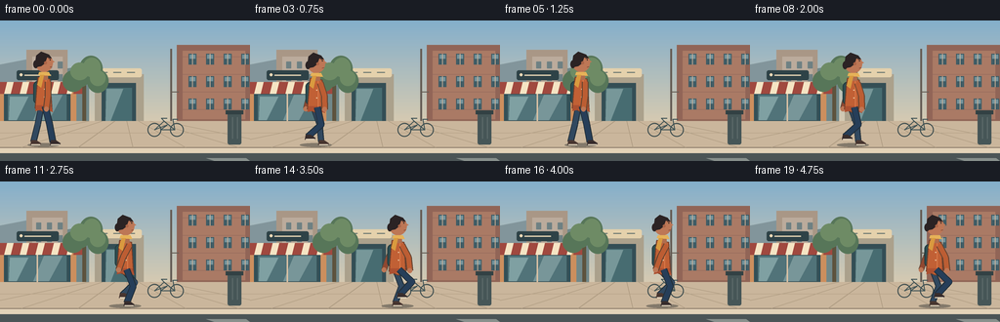
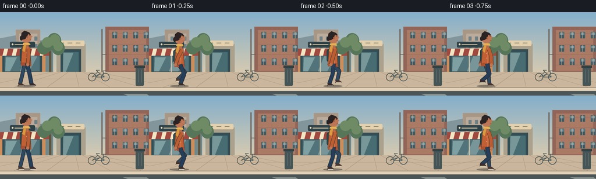

CODING AGENTS AS PIXEL WORLD MODELS
traex/GPT-5.6-Sol · motion_rationality_0031
点击播放 · 原生 RGB 像素
逐轮保存的候选
回放视频、检查图与代码变化。
每份候选均可单独播放。实际图片检查记录在下方工具轨迹中。
候选 01播放与检查图
点击播放 · 原生 RGB 像素


展开代码变化
--- 上一保存版本 +++ 本次保存版本 @@ -0,0 +1,213 @@ +from pathlib import Path +import math +import numpy as np +from PIL import Image, ImageDraw, ImageFont, ImageFilter +import artifact_io + +W,H,N = 256,144,20 +S=4 + +def sc(v): return int(round(v*S)) +def pts(seq): return [(sc(x),sc(y)) for x,y in seq] + +def ellipse(d, box, fill, outline=None, width=1): + d.ellipse(tuple(sc(v) for v in box), fill=fill, outline=outline, width=sc(width) if outline else 1) +def rect(d, box, fill, outline=None, width=1): + d.rectangle(tuple(sc(v) for v in box), fill=fill, outline=outline, width=sc(width) if outline else 1) +def rounded(d, box, radius, fill, outline=None, width=1): + d.rounded_rectangle(tuple(sc(v) for v in box), radius=sc(radius), fill=fill, outline=outline, width=sc(width) if outline else 1) +def line(d, xy, fill, width, joint='curve'): + d.line(pts(xy), fill=fill, width=sc(width), joint=joint) +def poly(d, xy, fill, outline=None): + d.polygon(pts(xy), fill=fill) + if outline: d.line(pts(xy+[xy[0]]), fill=outline, width=sc(1), joint='curve') + +def background(): + # softly graded late-afternoon sky + yy=np.linspace(0,1,H*S)[:,None,None] + top=np.array([131,174,203],float); bot=np.array([239,210,169],float) + arr=np.tile((top*(1-yy)+bot*yy),(1,W*S,1)).astype(np.uint8) + im=Image.fromarray(arr,'RGB'); d=ImageDraw.Draw(im) + # distant blocks + poly(d, [(0,45),(31,39),(31,101),(0,101)], '#81959c') + poly(d, [(27,30),(69,30),(69,103),(27,103)], '#a69788') + rect(d,(33,37,64,100),'#b7aa9d') + for y in (42,55,68,81): + for x in (37,48,59): rounded(d,(x,y,x+5,y+7),.5,'#6e8185') + poly(d,[(69,49),(91,45),(91,103),(69,103)],'#71888b') + # right brick apartment + rect(d,(181,25,256,104),'#8f665a') + rect(d,(187,31,251,101),'#a77b68') + for y in (37,55,73,91): + line(d,[(187,y),(251,y)],'#936b5f',.45) + for x in (193,211,229,247): + for y in (34,57,80): + rect(d,(x,y,x+8,y+11),'#425e68') + rect(d,(x+1,y+1,x+7,y+5),'#74949d') + line(d,[(x+4,y),(x+4,y+11)],'#d2b49c',.65) + # left shop facade and awning + rect(d,(0,64,78,108),'#c88f61') + rect(d,(4,73,72,104),'#36525a') + rect(d,(8,76,68,102),'#52747b') + # window reflections + poly(d,[(10,78),(29,78),(17,102),(9,102)],'#7e9fa3') + poly(d,[(45,76),(64,76),(50,102),(34,102)],'#77969a') + line(d,[(38,75),(38,103)],'#d8c0a5',1.4) + poly(d,[(0,63),(79,63),(73,75),(0,75)],'#efe1c4') + for x in range(-2,80,16): poly(d,[(x,63),(x+9,63),(x+6,75),(x-3,75)], '#9e4b42') + rounded(d,(17,51,60,61),2,'#31454a') + # deliberately decorative rather than text dependent + line(d,[(25,56),(52,56)],'#e7d7b8',1.2) + ellipse(d,(20,54,23,57),'#e7d7b8') + # center recessed doorway + rect(d,(97,55,147,106),'#a8a08e') + rect(d,(104,64,139,105),'#365058') + rect(d,(108,69,135,105),'#496d73') + poly(d,[(109,70),(126,70),(113,103),(108,103)],'#76979a') + rounded(d,(99,49,145,58),2,'#dfcfad') + for x in (102,116,130): line(d,[(x,53),(x+8,53)],'#657470',1) + # drainpipe and street details + line(d,[(175,29),(175,106)],'#665f58',2) + line(d,[(176,73),(183,73)],'#665f58',1) + # trees behind sidewalk + line(d,[(86,58),(86,112)],'#5e5541',4) + for box in [(72,43,93,68),(81,36,105,63),(64,51,86,73),(89,50,111,74)]: ellipse(d,box,'#58775c') + for box in [(72,43,91,61),(85,38,103,58),(92,51,108,67)]: ellipse(d,box,'#6e8b68') + # sidewalk, curb and road + poly(d,[(0,103),(256,103),(256,130),(0,130)],'#c6b59d') + poly(d,[(0,130),(256,130),(256,136),(0,136)],'#ddd0b9') + rect(d,(0,136,256,144),'#4c5659') + line(d,[(0,130),(256,130)],'#8e8170',1) + # pavement seams in perspective + for x in (-40,22,80,136,190,244,300): line(d,[(128+(x-128)*.22,103),(x,130)],'#aa9a84',.65) + line(d,[(0,115),(256,115)],'#b1a089',.55) + # bollard, trash bin at far right + rounded(d,(233,92,247,127),2,'#48585a') + rect(d,(231,92,249,96),'#354447') + line(d,[(238,99),(238,121)],'#657476',.8) + line(d,[(243,99),(243,121)],'#657476',.8) + # a small parked bicycle, background-scale + ellipse(d,(151,105,165,119),None,'#3c4d50',1) + ellipse(d,(174,105,188,119),None,'#3c4d50',1) + line(d,[(158,112),(168,103),(179,112),(164,112),(171,107),(158,112)],'#44575a',1) + line(d,[(168,103),(165,100),(171,100)],'#44575a',1) + line(d,[(179,112),(177,101),(182,101)],'#44575a',1) + # subtle foreground lane mark + poly(d,[(211,141),(252,141),(256,144),(220,144)],'#87908e') + return im + +BG=background() + +def ik_knee(hip, foot, a=18.5, b=18.5, forward_bias=1): + hx,hy=hip; fx,fy=foot + dx,dy=fx-hx,fy-hy; dist=max(1e-5,math.hypot(dx,dy)); dist=min(dist,a+b-.01) + along=(a*a-b*b+dist*dist)/(2*dist) + height=math.sqrt(max(0,a*a-along*along)) + mx=hx+along*dx/dist; my=hy+along*dy/dist + # choose knee on forward (right) side of hip-foot axis + k1=(mx-height*dy/dist, my+height*dx/dist) + k2=(mx+height*dy/dist, my-height*dx/dist) + return k1 if k1[0] >= k2[0] else k2 + +def gait_target(p): + p=p%(2*math.pi) + if p < math.pi: # planted: moves backward exactly as pelvis advances + u=p/math.pi + x=10-20*u; lift=0 + else: # swing: smooth return, toe clears pavement + u=(p-math.pi)/math.pi + sm=u*u*(3-2*u) + x=-10+20*sm; lift=8.5*(math.sin(math.pi*u)**0.85) + return x,lift + +def draw_leg(d, hip, foot, color, shoe, far=False): + knee=ik_knee(hip,foot) + # trouser leg segments, outlined to retain joint continuity + outline='#25323c' + line(d,[hip,knee,foot],outline,7.1 if not far else 6.5) + line(d,[hip,knee,foot],color,5.2 if not far else 4.7) + ellipse(d,(knee[0]-2.6,knee[1]-2.6,knee[0]+2.6,knee[1]+2.6),color) + # shoe points in walking direction + ankle=foot + poly(d,[(ankle[0]-2,ankle[1]-2),(ankle[0]+3,ankle[1]-2),(ankle[0]+8,ankle[1]+1.2),(ankle[0]+7,ankle[1]+3),(ankle[0]-3,ankle[1]+3)],shoe) + line(d,[(ankle[0]-2,ankle[1]+2.5),(ankle[0]+7,ankle[1]+2.5)],'#e8dfca',1) + +def draw_arm(d, shoulder, phase, far=False): + # arm swing opposes ipsilateral leg; hands stay beside torso + ang=.52*math.sin(phase+math.pi) + L1,L2=14,14 + elbow=(shoulder[0]+math.sin(ang)*L1, shoulder[1]+math.cos(ang)*L1) + fore=ang*.45 - .12 + hand=(elbow[0]+math.sin(fore)*L2, elbow[1]+math.cos(fore)*L2) + edge='#644634' if not far else '#5d493c' + fabric='#b85f37' if not far else '#8e4a35' + line(d,[shoulder,elbow,hand],edge,7 if not far else 6) + line(d,[shoulder,elbow,hand],fabric,5 if not far else 4.2) + ellipse(d,(hand[0]-2.4,hand[1]-2.5,hand[0]+2.4,hand[1]+2.5),'#b97859') + +def draw_person(im, i): + d=ImageDraw.Draw(im) + phase=2*math.pi*4*i/N + x=44+7.6*i + bob=-1.15*math.cos(2*phase) + hip_y=89+bob + shoulder_y=62+bob + ground=124.5 + # moving contact shadow: broad, low and transparent-looking painted shape + ellipse(d,(x-16,ground+1,x+17,ground+5),'#827a6d') + # gait positions. Far right leg is phase + pi, near left leg is phase + lx,llift=gait_target(phase) + rx,rlift=gait_target(phase+math.pi) + foot_near=(x+lx,ground-llift) + foot_far=(x+rx,ground-rlift) + hip_far=(x-2,hip_y); hip_near=(x+2,hip_y) + # far arm and leg + draw_arm(d,(x-2,shoulder_y+2),phase+math.pi,True) + draw_leg(d,hip_far,foot_far,'#334a62','#4a3934',True) + # backpack behind torso, with tiny motion-consistent bounce + rounded(d,(x-10,shoulder_y+1,x+1,hip_y-2),5,'#304f53',outline='#263e42',width=1) + line(d,[(x-5,shoulder_y+3),(x+2,shoulder_y+8),(x+2,hip_y-4)],'#233c3f',1.2) + # coat torso silhouette and hem; slight fabric flutter opposite travel + poly(d,[(x-5,shoulder_y-3),(x+7,shoulder_y-1),(x+9,hip_y+4),(x+1,hip_y+6),(x-8,hip_y+2),(x-6,shoulder_y+5)],'#bd6239',outline='#71412f') + poly(d,[(x-7,hip_y-1),(x+8,hip_y-1),(x+10,hip_y+6),(x+1,hip_y+3),(x-8,hip_y+5)],'#a95235') + line(d,[(x+3,shoulder_y),(x+3,hip_y+2)],'#db8050',.8) + ellipse(d,(x+1,shoulder_y+9,x+2,shoulder_y+10),'#edd7b5') + ellipse(d,(x+1,shoulder_y+17,x+2,shoulder_y+18),'#edd7b5') + # near leg then near arm + draw_leg(d,hip_near,foot_near,'#29415c','#3a3030',False) + draw_arm(d,(x+5,shoulder_y+2),phase,False) + # neck, head in side profile facing right + rect(d,(x-1,shoulder_y-7,x+5,shoulder_y),'#ad6e50') + ellipse(d,(x-8,shoulder_y-27,x+10,shoulder_y-8),'#b97859') + # nose and chin profile + poly(d,[(x+8,shoulder_y-21),(x+12,shoulder_y-18.5),(x+8,shoulder_y-17),(x+8,shoulder_y-12),(x+4,shoulder_y-9),(x,shoulder_y-10)],'#b97859') + # hair mass and small tied tuft + poly(d,[(x-8,shoulder_y-18),(x-7,shoulder_y-25),(x-2,shoulder_y-29),(x+6,shoulder_y-26),(x+9,shoulder_y-22),(x+4,shoulder_y-23),(x+2,shoulder_y-17),(x-2,shoulder_y-14),(x-7,shoulder_y-13)],'#2e2728') + ellipse(d,(x-10,shoulder_y-20,x-5,shoulder_y-12),'#2e2728') + # ear, eye, brow, face highlight + ellipse(d,(x+1,shoulder_y-19,x+4,shoulder_y-16),'#a8664a') + ellipse(d,(x+6.7,shoulder_y-21,x+7.7,shoulder_y-20),'#2d2927') + line(d,[(x+5.5,shoulder_y-22),(x+8,shoulder_y-22)],'#56382f',.7) + line(d,[(x+7,shoulder_y-13),(x+9,shoulder_y-13.5)],'#754638',.7) + # scarf adds directional cue + poly(d,[(x-4,shoulder_y-8),(x+6,shoulder_y-8),(x+8,shoulder_y-4),(x-5,shoulder_y-5)],'#e0b15b') + poly(d,[(x-3,shoulder_y-5),(x+1,shoulder_y-5),(x-2,shoulder_y+8),(x-6,shoulder_y+5)],'#d49a42') + + +def make_frames(): + frames=[] + for i in range(N): + im=BG.copy() + draw_person(im,i) + # downsample gives clean cinematic antialiasing + im=im.resize((W,H),Image.Resampling.LANCZOS) + # restrained contrast and warmth; all RGB + a=np.asarray(im).astype(np.float32) + a=(a-128)*1.035+128 + a[:,:,0]*=1.012; a[:,:,2]*=.988 + frames.append(np.clip(a,0,255).astype(np.uint8)) + return np.stack(frames) + +if __name__=='__main__': + frames=make_frames() + artifact_io.save(frames,Path(__file__).resolve().parent)
可观测工具轨迹
实际执行的命令与返回图片。
命令 1exit 0
/bin/bash -lc "cat prompt.txt && printf '\\n---RULES---\\n' && cat GENERATION_RULES.md && printf '\\n---SPEC---\\n' && cat task_spec.json"
命令 2exit 0
/bin/bash -lc "find . -maxdepth 2 -type f -printf '%p\\n' | sort | head -200"
命令 3exit 0
/bin/bash -lc "sed -n '1,240p' artifact_io.py"
命令 4exit 0
/bin/bash -lc "cat > generate.py <<'PY'
from pathlib import Path
import math
import numpy as np
from PIL import Image, ImageDraw, ImageFont, ImageFilter
import artifact_io
W,H,N = 256,144,20
S=4
def sc(v): return int(round(v*S))
def pts(seq): return [(sc(x),sc(y)) for x,y in seq]
def ellipse(d, box, fill, outline=None, width=1):
d.ellipse(tuple(sc(v) for v in box), fill=fill, outline=outline, width=sc(width) if outline else 1)
def rect(d, box, fill, outline=None, width=1):
d.rectangle(tuple(sc(v) for v in box), fill=fill, outline=outline, width=sc(width) if outline else 1)
def rounded(d, box, radius, fill, outline=None, width=1):
d.rounded_rectangle(tuple(sc(v) for v in box), radius=sc(radius), fill=fill, outline=outline, width=sc(width) if outline else 1)
def line(d, xy, fill, width, joint='curve'):
d.line(pts(xy), fill=fill, width=sc(width), joint=joint)
def poly(d, xy, fill, outline=None):
d.polygon(pts(xy), fill=fill)
if outline: d.line(pts(xy+[xy[0]]), fill=outline, width=sc(1), joint='curve')
def background():
# softly graded late-afternoon sky
yy=np.linspace(0,1,H*S)[:,None,None]
top=np.array([131,174,203],float); bot=np.array([239,210,169],float)
arr=np.tile((top*(1-yy)+bot*yy),(1,W*S,1)).astype(np.uint8)
im=Image.fromarray(arr,'RGB'); d=ImageDraw.Draw(im)
# distant blocks
poly(d, [(0,45),(31,39),(31,101),(0,101)], '#81959c')
poly(d, [(27,30),(69,30),(69,103),(27,103)], '#a69788')
rect(d,(33,37,64,100),'#b7aa9d')
for y in (42,55,68,81):
for x in (37,48,59): rounded(d,(x,y,x+5,y+7),.5,'#6e8185')
poly(d,[(69,49),(91,45),(91,103),(69,103)],'#71888b')
# right brick apartment
rect(d,(181,25,256,104),'#8f665a')
rect(d,(187,31,251,101),'#a77b68')
for y in (37,55,73,91):
line(d,[(187,y),(251,y)],'#936b5f',.45)
for x in (193,211,229,247):
for y in (34,57,80):
rect(d,(x,y,x+8,y+11),'#425e68')
rect(d,(x+1,y+1,x+7,y+5),'#74949d')
line(d,[(x+4,y),(x+4,y+11)],'#d2b49c',.65)
# left shop facade and awning
rect(d,(0,64,78,108),'#c88f61')
rect(d,(4,73,72,104),'#36525a')
rect(d,(8,76,68,102),'#52747b')
# window reflections
poly(d,[(10,78),(29,78),(17,102),(9,102)],'#7e9fa3')
poly(d,[(45,76),(64,76),(50,102),(34,102)],'#77969a')
line(d,[(38,75),(38,103)],'#d8c0a5',1.4)
poly(d,[(0,63),(79,63),(73,75),(0,75)],'#efe1c4')
for x in range(-2,80,16): poly(d,[(x,63),(x+9,63),(x+6,75),(x-3,75)], '#9e4b42')
rounded(d,(17,51,60,61),2,'#31454a')
# deliberately decorative rather than text dependent
line(d,[(25,56),(52,56)],'#e7d7b8',1.2)
ellipse(d,(20,54,23,57),'#e7d7b8')
# center recessed doorway
rect(d,(97,55,147,106),'#a8a08e')
rect(d,(104,64,139,105),'#365058')
rect(d,(108,69,135,105),'#496d73')
poly(d,[(109,70),(126,70),(113,103),(108,103)],'#76979a')
rounded(d,(99,49,145,58),2,'#dfcfad')
for x in (102,116,130): line(d,[(x,53),(x+8,53)],'#657470',1)
# drainpipe and street details
line(d,[(175,29),(175,106)],'#665f58',2)
line(d,[(176,73),(183,73)],'#665f58',1)
# trees behind sidewalk
line(d,[(86,58),(86,112)],'#5e5541',4)
for box in [(72,43,93,68),(81,36,105,63),(64,51,86,73),(89,50,111,74)]: ellipse(d,box,'#58775c')
for box in [(72,43,91,61),(85,38,103,58),(92,51,108,67)]: ellipse(d,box,'#6e8b68')
# sidewalk, curb and road
poly(d,[(0,103),(256,103),(256,130),(0,130)],'#c6b59d')
poly(d,[(0,130),(256,130),(256,136),(0,136)],'#ddd0b9')
rect(d,(0,136,256,144),'#4c5659')
line(d,[(0,130),(256,130)],'#8e8170',1)
# pavement seams in perspective
for x in (-40,22,80,136,190,244,300): line(d,[(128+(x-128)*.22,103),(x,130)],'#aa9a84',.65)
line(d,[(0,115),(256,115)],'#b1a089',.55)
# bollard, trash bin at far right
rounded(d,(233,92,247,127),2,'#48585a')
rect(d,(231,92,249,96),'#354447')
line(d,[(238,99),(238,121)],'#657476',.8)
line(d,[(243,99),(243,121)],'#657476',.8)
# a small parked bicycle, background-scale
ellipse(d,(151,105,165,119),None,'#3c4d50',1)
ellipse(d,(174,105,188,119),None,'#3c4d50',1)
line(d,[(158,112),(168,103),(179,112),(164,112),(171,107),(158,112)],'#44575a',1)
line(d,[(168,103),(165,100),(171,100)],'#44575a',1)
line(d,[(179,112),(177,101),(182,101)],'#44575a',1)
# subtle foreground lane mark
poly(d,[(211,141),(252,141),(256,144),(220,144)],'#87908e')
return im
BG=background()
def ik_knee(hip, foot, a=18.5, b=18.5, forward_bias=1):
hx,hy=hip; fx,fy=foot
dx,dy=fx-hx,fy-hy; dist=max(1e-5,math.hypot(dx,dy)); dist=min(dist,a+b-.01)
along=(a*a-b*b+dist*dist)/(2*dist)
height=math.sqrt(max(0,a*a-along*along))
mx=hx+along*dx/dist; my=hy+along*dy/dist
# choose knee on forward (right) side of hip-foot axis
k1=(mx-height*dy/dist, my+height*dx/dist)
k2=(mx+height*dy/dist, my-height*dx/dist)
return k1 if k1[0] >= k2[0] else k2
def gait_target(p):
p=p%(2*math.pi)
if p < math.pi: # planted: moves backward exactly as pelvis advances
u=p/math.pi
x=10-20*u; lift=0
else: # swing: smooth return, toe clears pavement
u=(p-math.pi)/math.pi
sm=u*u*(3-2*u)
x=-10+20*sm; lift=8.5*(math.sin(math.pi*u)**0.85)
return x,lift
def draw_leg(d, hip, foot, color, shoe, far=False):
knee=ik_knee(hip,foot)
# trouser leg segments, outlined to retain joint continuity
outline='#25323c'
line(d,[hip,knee,foot],outline,7.1 if not far else 6.5)
line(d,[hip,knee,foot],color,5.2 if not far else 4.7)
ellipse(d,(knee[0]-2.6,knee[1]-2.6,knee[0]+2.6,knee[1]+2.6),color)
# shoe points in walking direction
ankle=foot
poly(d,[(ankle[0]-2,ankle[1]-2),(ankle[0]+3,ankle[1]-2),(ankle[0]+8,ankle[1]+1.2),(ankle[0]+7,ankle[1]+3),(ankle[0]-3,ankle[1]+3)],shoe)
line(d,[(ankle[0]-2,ankle[1]+2.5),(ankle[0]+7,ankle[1]+2.5)],'#e8dfca',1)
def draw_arm(d, shoulder, phase, far=False):
# arm swing opposes ipsilateral leg; hands stay beside torso
ang=.52*math.sin(phase+math.pi)
L1,L2=14,14
elbow=(shoulder[0]+math.sin(ang)*L1, shoulder[1]+math.cos(ang)*L1)
fore=ang*.45 - .12
hand=(elbow[0]+math.sin(fore)*L2, elbow[1]+math.cos(fore)*L2)
edge='#644634' if not far else '#5d493c'
fabric='#b85f37' if not far else '#8e4a35'
line(d,[shoulder,elbow,hand],edge,7 if not far else 6)
line(d,[shoulder,elbow,hand],fabric,5 if not far else 4.2)
ellipse(d,(hand[0]-2.4,hand[1]-2.5,hand[0]+2.4,hand[1]+2.5),'#b97859')
def draw_person(im, i):
d=ImageDraw.Draw(im)
phase=2*math.pi*4*i/N
x=44+7.6*i
bob=-1.15*math.cos(2*phase)
hip_y=89+bob
shoulder_y=62+bob
ground=124.5
# moving contact shadow: broad, low and transparent-looking painted shape
ellipse(d,(x-16,ground+1,x+17,ground+5),'#827a6d')
# gait positions. Far right leg is phase + pi, near left leg is phase
lx,llift=gait_target(phase)
rx,rlift=gait_target(phase+math.pi)
foot_near=(x+lx,ground-llift)
foot_far=(x+rx,ground-rlift)
hip_far=(x-2,hip_y); hip_near=(x+2,hip_y)
# far arm and leg
draw_arm(d,(x-2,shoulder_y+2),phase+math.pi,True)
draw_leg(d,hip_far,foot_far,'#334a62','#4a3934',True)
# backpack behind torso, with tiny motion-consistent bounce
rounded(d,(x-10,shoulder_y+1,x+1,hip_y-2),5,'#304f53',outline='#263e42',width=1)
line(d,[(x-5,shoulder_y+3),(x+2,shoulder_y+8),(x+2,hip_y-4)],'#233c3f',1.2)
# coat torso silhouette and hem; slight fabric flutter opposite travel
poly(d,[(x-5,shoulder_y-3),(x+7,shoulder_y-1),(x+9,hip_y+4),(x+1,hip_y+6),(x-8,hip_y+2),(x-6,shoulder_y+5)],'#bd6239',outline='#71412f')
poly(d,[(x-7,hip_y-1),(x+8,hip_y-1),(x+10,hip_y+6),(x+1,hip_y+3),(x-8,hip_y+5)],'#a95235')
line(d,[(x+3,shoulder_y),(x+3,hip_y+2)],'#db8050',.8)
ellipse(d,(x+1,shoulder_y+9,x+2,shoulder_y+10),'#edd7b5')
ellipse(d,(x+1,shoulder_y+17,x+2,shoulder_y+18),'#edd7b5')
# near leg then near arm
draw_leg(d,hip_near,foot_near,'#29415c','#3a3030',False)
draw_arm(d,(x+5,shoulder_y+2),phase,False)
# neck, head in side profile facing right
rect(d,(x-1,shoulder_y-7,x+5,shoulder_y),'#ad6e50')
ellipse(d,(x-8,shoulder_y-27,x+10,shoulder_y-8),'#b97859')
# nose and chin profile
poly(d,[(x+8,shoulder_y-21),(x+12,shoulder_y-18.5),(x+8,shoulder_y-17),(x+8,shoulder_y-12),(x+4,shoulder_y-9),(x,shoulder_y-10)],'#b97859')
# hair mass and small tied tuft
poly(d,[(x-8,shoulder_y-18),(x-7,shoulder_y-25),(x-2,shoulder_y-29),(x+6,shoulder_y-26),(x+9,shoulder_y-22),(x+4,shoulder_y-23),(x+2,shoulder_y-17),(x-2,shoulder_y-14),(x-7,shoulder_y-13)],'#2e2728')
ellipse(d,(x-10,shoulder_y-20,x-5,shoulder_y-12),'#2e2728')
# ear, eye, brow, face highlight
ellipse(d,(x+1,shoulder_y-19,x+4,shoulder_y-16),'#a8664a')
ellipse(d,(x+6.7,shoulder_y-21,x+7.7,shoulder_y-20),'#2d2927')
line(d,[(x+5.5,shoulder_y-22),(x+8,shoulder_y-22)],'#56382f',.7)
line(d,[(x+7,shoulder_y-13),(x+9,shoulder_y-13.5)],'#754638',.7)
# scarf adds directional cue
poly(d,[(x-4,shoulder_y-8),(x+6,shoulder_y-8),(x+8,shoulder_y-4),(x-5,shoulder_y-5)],'#e0b15b')
poly(d,[(x-3,shoulder_y-5),(x+1,shoulder_y-5),(x-2,shoulder_y+8),(x-6,shoulder_y+5)],'#d49a42')
def make_frames():
frames=[]
for i in range(N):
im=BG.copy()
draw_person(im,i)
# downsample gives clean cinematic antialiasing
im=im.resize((W,H),Image.Resampling.LANCZOS)
# restrained contrast and warmth; all RGB
a=np.asarray(im).astype(np.float32)
a=(a-128)*1.035+128
a[:,:,0]*=1.012; a[:,:,2]*=.988
frames.append(np.clip(a,0,255).astype(np.uint8))
return np.stack(frames)
if __name__=='__main__':
frames=make_frames()
artifact_io.save(frames,Path(__file__).resolve().parent)
PY
python generate.py
ls -lh pixels.npz inspection.png frames/00.png index.html"视觉工具实际返回图片 1

视觉工具实际返回图片 2

保存候选 1 份；完成命令 4 次；可验证图片返回 2 张。原始 API 响应与完整日志保留在本地。